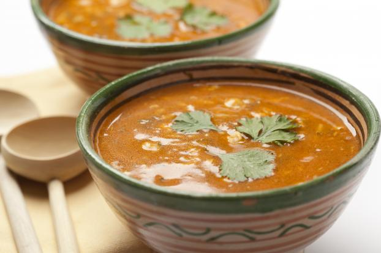

Harira

La Harira est une soupe traditionnelle du Maghreb (Algérie et Maroc) aux légumes secs, aux oignons et à la viande.
Ingrédients :
200 g de viande de mouton ou de bœuf ou abats de poulet
1 grand verre de farine
1 bol de pois chiches trempés
1 oignon
1 coulis de tomates
100 g de lentilles
2 branches de céleri
60 g de cheveux d'anges
1 œuf
Une petite boite de concentré de tomate
1 noix de beurre ou 1 c.à.c de smen
1 bouquet de persil
1 bouquet de coriandre
1 pincée de cannelle
1 pincée de safran
Sel
Poivre
Préparation :
Étape 1 :
Couper la viande en petits dés, hacher finement le coriandre, le persil, le céleri et l'oignon.
Les mettre dans une cocotte-minute, ajouter les pois chiches, les lentilles, le safran, la cannelle, le poivre, le sel, la noix de beurre (ou smen) et le coulis de tomates.
Recouvrir de 2 litres d'eau et faire cuire à couvert 20 à 30 min.
Étape 2 :
Dans un Tupperware, délayer la farine dans 1/2 litre d'eau, secouer énergiquement pour éviter les grumeaux.
Une fois que les pois chiches sont bien cuits, mettre la cocotte sur feu moyen et y incorporer le concentré de tomate et cheveux d'anges, dans 5 mn ajouter le mélange farine + eau tout en remuant. Porter à ébullition sans cesser de remuer.
Dans un bol brouiller l'oeuf et le verser dans la préparation tout en remuant.
Étape 3 :
Laisser bouillir l'ensemble pendant 10 à 15 minutes.
Vérifier l'assaisonnement et la consistance de la soupe qui doit être veloutée mais non épaisse, rajouter de l'eau si c'est le cas.